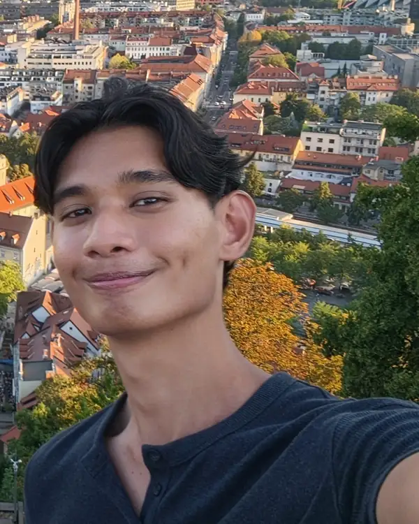
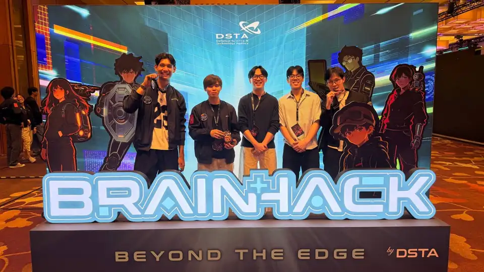
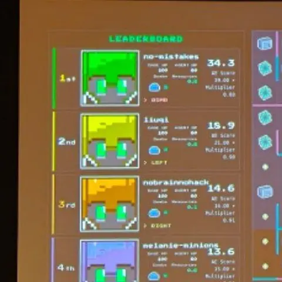

I’m in my second year of Computing Science at SIT, on the joint degree with the University of Glasgow. Before this I did a diploma in Applied AI & Analytics at Singapore Polytechnic, interned with Oracle’s solution engineering team, and spent two years of National Service as an assistant field instructor with the Police’s Special Operations Command.
The work I enjoy most is the stuff underneath the screen: data loaders, queues, database schemas, test suites. It’s rarely the part people screenshot, but it’s where a project gets fast or falls over.

a better view than my desk
Things I’ve built
Three I’m proudest of, with what went wrong and what I changed. The rest are further down.
May–Jun 2026Team “no-mistakes” · DSTA
BrainHack TIL-AI 2026: training an agent to play a Bomberman-style game
DSTA’s national AI challenge throws speech recognition, computer vision, NLP and an autonomous agent at you in a few weeks. I took the agent. We made the finals in the Novice category; only the top 20 teams got past the semis.
THE APPROACH
Rather than hand-writing rules for the agent, I built a genetic-algorithm pipeline that evolves them: a population of 100 neural-network policies, trained through a three-phase curriculum.
KEEPING IT HONEST
Evolution finds shortcuts. I added plateau detection and checkpointing so long runs could recover, plus a diagnostics tool to catch agents that had learned degenerate strategies instead of actually playing.
Python · neural networks · genetic algorithms

The team at the finals.

Top of the live leaderboard during the competition.
About a million rows of orders and clickstream data: transactions in PostgreSQL, browsing events in MongoDB, a Python API and a React front end, across five Docker containers.
THE PROBLEM
Loading the full dataset was painfully slow, so every schema change took ages to test.
WHAT I CHANGED
Grouped 761,000 single update_one calls into one batched $push per session, switched session inserts to insert_many, and fixed the sneakiest one: the loader was bcrypt-hashing the demo password once per user. Hashing it once saved about 83 minutes on its own.
ALSO
Password hashing, the cart and login flows, and getting the suite to 161 passing tests.
A Flask app over 3,425 airports that finds cheapest routes (Dijkstra), alternatives (Yen’s K-shortest paths) and everywhere you can reach in N stops (BFS). The BFS and its benchmarks were mine.
THE IDEA
Python’s list makes a slow queue, so I wrote my own: an unrolled linked list that keeps O(1) pops without allocating a node per item.
THE HONEST RESULT
On small graphs it’s actually slower (0.82× at 5,000 nodes). It only pulls ahead past about 20,000 nodes, reaching 1.74× at 100,000. Our real dataset is small enough that it barely matters. Worth knowing before claiming a speedup.
A Linux kernel module that logs file activity on USB drives and flags mass copying. I wrote the end-to-end tests and fixed the compile and timing bugs from review. 20 of 26 commits.
A life-sim game in the terminal, in Java. I broke up a “god method”, untangled circular dependencies with dependency injection, and added tests and CI.
My internship project from 2022: Flask on Oracle Autonomous Database, with listing images from a headless CMS and an image-scanning flow on upload.
Beat my tic-tac-toe AI
My first-year C project had a bug: the computer worked out your best move and played it itself. I rewrote it with alpha-beta search, then ported it here. On Hard it can’t lose, so a draw is a win.
You’re X. Your move.
You 0 · Computer 0 · Draws 0
The original C version checks itself: it plays out every possible game against the Hard AI and confirms it never loses.
$ make test
./tictactoe --selftest
Exhaustive check: 16752 games played, 0 lost by the AI
All self-tests passed.
Part-time over the holiday rush: helping with sizing and styling, handling the till, returns and exchanges, and keeping the fitting rooms in order.
Aug 2023 – Aug 2025
Assistant Field Instructor, Special Operations Command, SPF
National Service. Helped deliver TAC 2 Immediate Response Team training to newly recruited regular officers, after being trained to TAC 3 myself.
Sep 2022 – Feb 2023
Solution Engineering Intern, Oracle Singapore
Earned the OCI Foundations Associate cert, co-built the real estate demo above for a client pitch, and wrote a proposal on API management and SOA for a client in Pakistan.
Day to day I write Python and SQL, with Java and C for coursework. I’m comfortable in Linux and Docker, and I’ve shipped things on PostgreSQL, MongoDB and Oracle Cloud. I speak English and Malay.
Contact
Got a part-time role or internship? Email’s the fastest way to reach me.